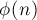

MAXimal
добавлено: 16 Jan 2009 0:58
редактировано: 20 Aug 2012 23:51
Содержание [скрыть]
Первообразные корни
Определение
Первообразным корнем по модулю  (primitive root modulo ) называется такое число
(primitive root modulo ) называется такое число  , что все его степени по модулю пробегают по всем числам, взаимно простым с . Математически это формулируется таким образом: если является первообразным корнем по модулю , то для любого целого
, что все его степени по модулю пробегают по всем числам, взаимно простым с . Математически это формулируется таким образом: если является первообразным корнем по модулю , то для любого целого  такого, что , найдётся такое целое
такого, что , найдётся такое целое  , что .
, что .
В частности, для случая простого степени первообразного корня пробегают по всем числам от  до
до  .
.
Существование
Первообразный корень по модулю существует тогда и только тогда, когда является либо степенью нечётного простого, либо удвоенной степенью простого, а также в случаях , ,  .
.
Эта теорема (которая была полностью доказана Гауссом в 1801 г.) приводится здесь без доказательства.
Связь с функцией Эйлера
Пусть - первообразный корень по модулю . Тогда можно показать, что наименьшее число , для которого (т.е. — показатель (multiplicative order)), равно . Более того, верно и обратное, и этот факт будет использован нами ниже в алгоритме нахождения первообразного корня.
Кроме того, если по модулю есть хотя бы один первообразный корень, то всего их (т.к. циклическая группа с элементами имеет генераторов).
Алгоритм нахождения первообразного корня
Наивный алгоритм потребует для каждого тестируемого значения  времени, чтобы вычислить все его степени и проверить, что они все различны. Это слишком медленный алгоритм, ниже мы с помощью нескольких известных теорем из теории чисел получим более быстрый алгоритм.
времени, чтобы вычислить все его степени и проверить, что они все различны. Это слишком медленный алгоритм, ниже мы с помощью нескольких известных теорем из теории чисел получим более быстрый алгоритм.
Выше была приведена теорема о том, что если наименьшее число , для которого (т.е. — показатель ), равно , то — первообразный корень. Так как для любого числа , взаимно простого с , выполняется теорема Эйлера (), то чтобы проверить, что первообразный корень, достаточно проверить, что для всех чисел  , меньших , выполнялось . Однако пока это слишком медленный алгоритм.
, меньших , выполнялось . Однако пока это слишком медленный алгоритм.
Из теоремы Лагранжа следует, что показатель любого числа по модулю является делителем . Таким образом, достаточно проверить, что для всех собственных делителей выполняется . Это уже значительно более быстрый алгоритм, однако можно пойти ещё дальше.
Факторизуем число . Докажем, что в предыдущем алгоритме достаточно рассматривать в качестве лишь числа вида . Действительно, пусть — произвольный собственный делитель . Тогда, очевидно, найдётся такое  , что , т.е. . Однако, если бы , то мы получили бы:
, что , т.е. . Однако, если бы , то мы получили бы:
Таким образом, алгоритм нахождения первообразного корня такой. Находим , факторизуем его. Теперь перебираем все числа  , и для каждого считаем все величины . Если для текущего все эти числа оказались отличными от , то это и является искомым первообразным корнем.
, и для каждого считаем все величины . Если для текущего все эти числа оказались отличными от , то это и является искомым первообразным корнем.
Время работы алгоритма (считая, что у числа имеется делителей, а возведение в степень выполняется алгоритмом Бинарного возведения в степень, т.е. за  ) равно плюс время факторизации числа , где
) равно плюс время факторизации числа , где  — результат, т.е. значение искомого первообразного корня.
— результат, т.е. значение искомого первообразного корня.
Про скорость роста первообразных корней с ростом известны лишь приблизительные оценки. Известно, что первообразные корни — сравнительно небольшие величины. Одна из известных оценок — оценка Шупа (Shoup), что, в предположении истинности гипотезы Римана, первообразный корень есть .
Реализация
Функция powmod() выполняет бинарное возведение в степень по модулю, а функция generator (int p) - находит первообразный корень по простому модулю  (факторизация числа здесь осуществлена простейшим алгоритмом за ).
(факторизация числа здесь осуществлена простейшим алгоритмом за ).
Чтобы адаптировать эту функцию для произвольных , достаточно добавить вычисление функции Эйлера в переменной  , а также отсеивать , не являющиеся взаимно простыми с .
, а также отсеивать , не являющиеся взаимно простыми с .
int powmod (int a, int b, int p) { int res = 1; while (b) if (b & 1) res = int (res * 1ll * a % p), --b; else a = int (a * 1ll * a % p), b >>= 1; return res; } int generator (int p) { vector<int> fact; int phi = p-1, n = phi; for (int i=2; i*i<=n; ++i) if (n % i == 0) { fact.push_back (i); while (n % i == 0) n /= i; } if (n > 1) fact.push_back (n); for (int res=2; res<=p; ++res) { bool ok = true; for (size_t i=0; i<fact.size() && ok; ++i) ok &= powmod (res, phi / fact[i], p) != 1; if (ok) return res; } return -1; }